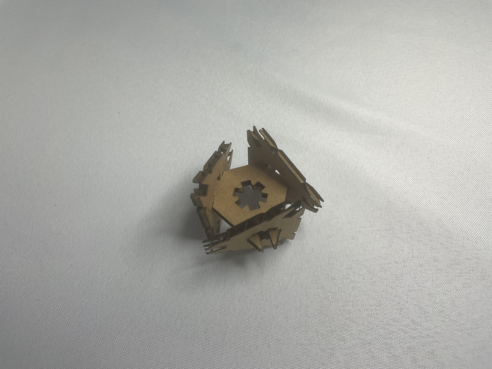

Create a press-fit construction kit that can be assembled in multiple ways, and accounts for lasercutter kerf.
I designed some funky triangles that connect to each other in several ways. I started with a Fusion360 sketch - since I'm familiar with the software, it was pretty simple.
Next, I cut a sample cut to figure out whether my settings and measurements were correct. I measured the width of the cardboard and decided to use 0.1mm kerf to start, then cut two triangles on the laser cutter. With my first try of speed and power settings, it didn't fully cut through, and the joint fittings were a little looser than I wanted them to be.
I went back to my sketch and made the slot width 0.1mm smaller to tighten up the joints, then cut a second batch with 5% more power. This worked well! The pieces cut well and fit together nicely.
Initial sketch, a poorly-cut first attempt piece (note the leftmost corner slot has excess cardboard), and two possible second attempt configurations
However, I had intended for one more functional joint. I wanted to be able to connect two triangle points through the middle of a third triangle, but when I tried, I realized there was a geometrical problem.

Ideally, these would fit, but the angles don't work out.
I went back to my sketch and changed the six-pointed star in the middle of each triangle into a plus sign. That way, the points of the triangles can intersect and go through the middle of another triangle. One more run on the laser cutter later...

it fits!
I really like how these triangles can come together in many different ways and orientations. There's an interesting aspect where the triangle corners make 60 degree angles and the internal + makes 90 degree angles, which opens up so many funky shape possibilities.